GGPlot introduction
Bill Perry
2018/03/14
Create Directories
So lets create a project with all of the subdirectories on your computer. Create a folder somewhere - I usually have the following format:
r_projects
2018_stats
- archive
- data
- documents
- scripts
- figures
- output
- archive
Create Project
Now click - File - New Project and create a project called 2018_stats in your R Projects Folder. This is what you will open to start working on the project and then you can work with scripts in there.
Try doing this based on what we did last week.
Remember to creat the sub directories manually in the files pane
scripts
data
documents
figures
final_data
Download Data
I have placed example data files below. You can also access the iris dataframe from within R using the code iris.df <- iris in your R script. You should download these files and put them in the data directory of your project.
R script we might get through in class GGplot R Script
Create R Script
Now to create the R Script that we will work with. Click File - New File - R Script. This will open a file and you need to save it into the Scripts directory.
Click File - Save As and name the file what you want and save it in your scripts folder. What will you name the file?
Now is where the fun begins.
# load the libraries each time you restart R
library(tidyverse)
library(lubridate)
library(readxl)
library(scales)
library(skimr)
library(patchwork)
# install.packages("devtools")
# devtools::install_github("thomasp85/patchwork")
# read in the csv file
# note here we are using relative file paths to find the file
# try hitting "" and then tab inside of the "" - this will bring up choices
iris.df <- read_csv("data/iris.csv")
#'Lets read in the iris excel file
#'The only thing that you might need to do is specify the sheet if you use
#'multiple sheets
#'
iris_excel.df <- read_excel("data/iris_excel.xlsx", sheet="iris_excel")
# if there is only one sheet - no worriesView Data
Look at the data with glimpse
glimpse(iris.df)## Observations: 150
## Variables: 5
## $ Sepal.Length <dbl> 5.1, NA, 4.7, 4.6, 5.0, 5.4, 4.6, 5.0, 4.4, 4.9, ...
## $ Sepal.Width <dbl> 3.5, 3.0, 3.2, 3.1, 3.6, 3.9, 3.4, 3.4, 2.9, 3.1,...
## $ Petal.Length <dbl> 1.4, 1.4, 1.3, 1.5, 1.4, 1.7, 1.4, 1.5, 1.4, 1.5,...
## $ Petal.Width <dbl> 0.2, 0.2, 0.2, 0.2, 0.2, 0.4, 0.3, 0.2, 0.2, 0.1,...
## $ Species <chr> "setosa", "setosa", "setosa", "setosa", "setosa",...Look at the top or bottle of the data
head(iris.df)## # A tibble: 6 x 5
## Sepal.Length Sepal.Width Petal.Length Petal.Width Species
## <dbl> <dbl> <dbl> <dbl> <chr>
## 1 5.1 3.5 1.4 0.2 setosa
## 2 NA 3 1.4 0.2 setosa
## 3 4.7 3.2 1.3 0.2 setosa
## 4 4.6 3.1 1.5 0.2 setosa
## 5 5 3.6 1.4 0.2 setosa
## 6 5.4 3.9 1.7 0.4 setosa# tail(iris.df)Plot data
So below I have added in data=, y= and x= but they are not really necessary
ggplot(data=iris.df, aes(x=Petal.Length, y=Petal.Width)) +
geom_point() 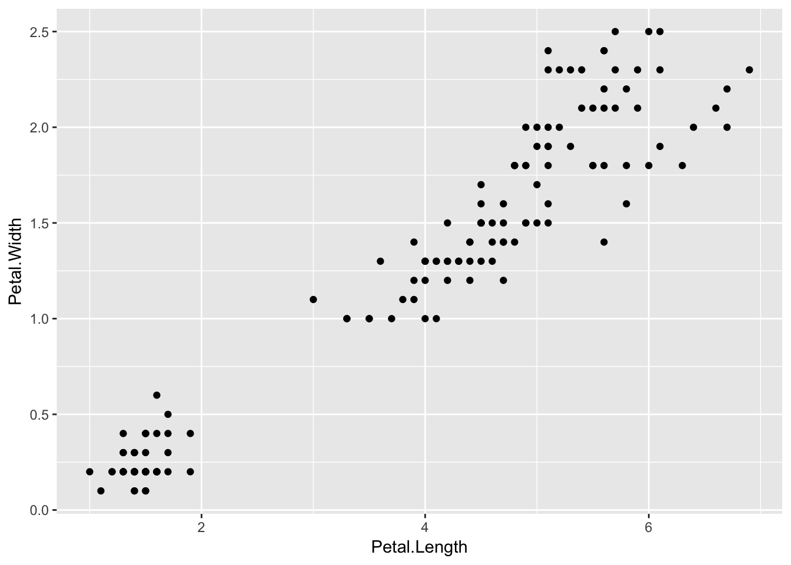
This creates the same image. You are just putting the aestetics in the geometry section
#' This is the same as the above plot but puts the aesthetics in the geometry
ggplot(data=iris.df) +
geom_point(aes(x=Petal.Length, y=Petal.Width)) 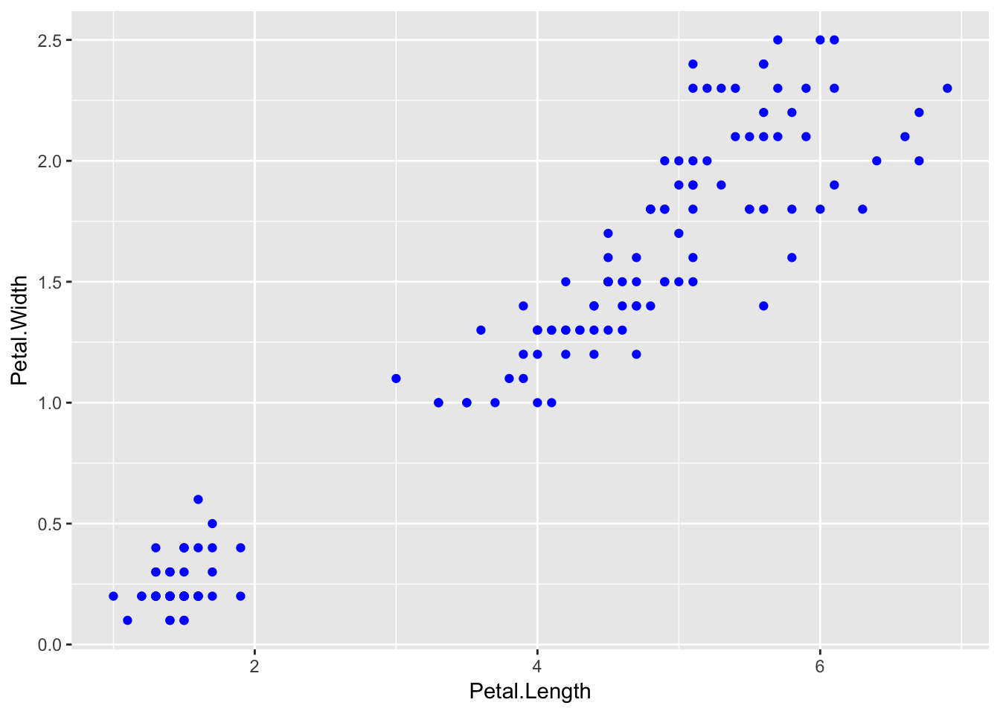
What is the advantage of doing the above method? How could you add a set of points for Sepal.Length and Sepal.Width to the existing graph:
ggplot(data=iris.df) +
geom_point(aes(x=Petal.Length, y=Petal.Width)) Colors of points
Note in the above graph all of the points are black although we know there are three species. We can do two things with this. We can add a color to the graph
ggplot(data=iris.df, aes(x=Petal.Length, y=Petal.Width)) +
geom_point(color="blue") 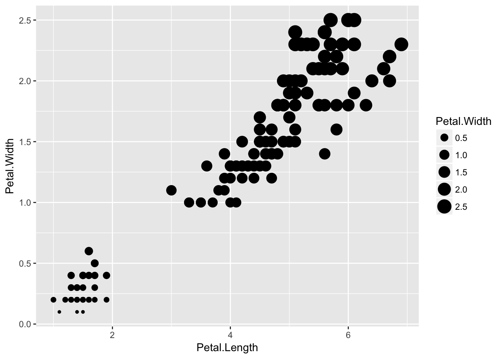
This creates a color for all of the points. We can however map the colors to the species to make colors vary for each Species
ggplot(data=iris.df, aes(x=Petal.Length, y=Petal.Width, color=Species)) +
geom_point() 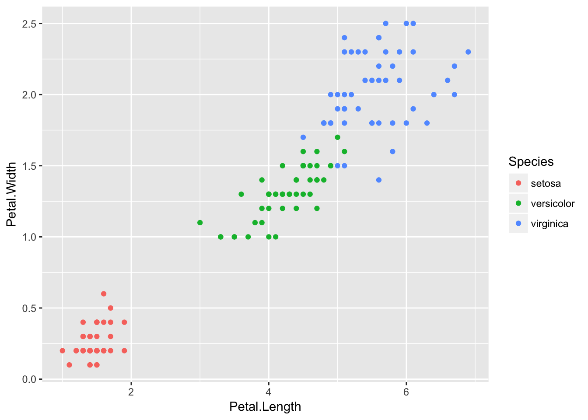
Size of points
We could also just make the point sizes all just larger by entering the size parameter outside of the aesthetics parentheses.
ggplot(data=iris.df, aes(x=Petal.Length, y=Petal.Width, color=Species)) +
geom_point(size=3) 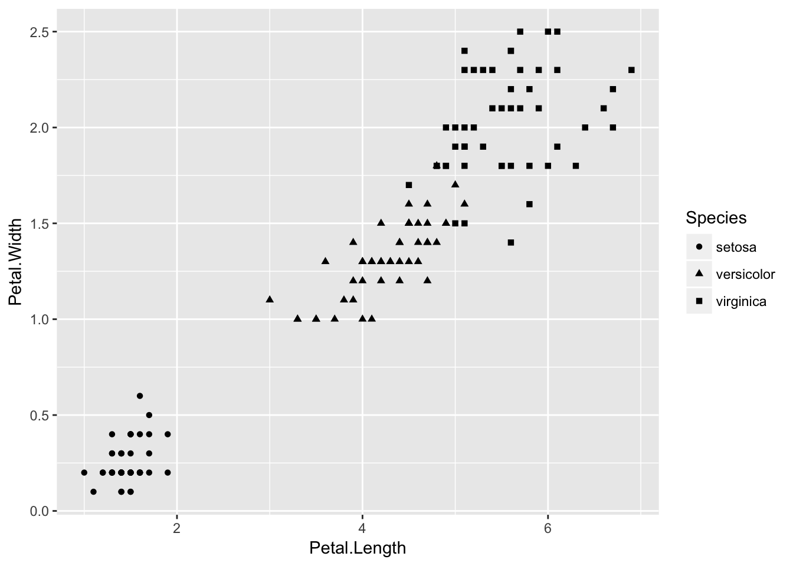
We can do the same thing with size of data points based on Petal.Width or other continuous variable.
ggplot(data=iris.df, aes(x=Petal.Length, y=Petal.Width, color=Species)) +
geom_point(size=4) 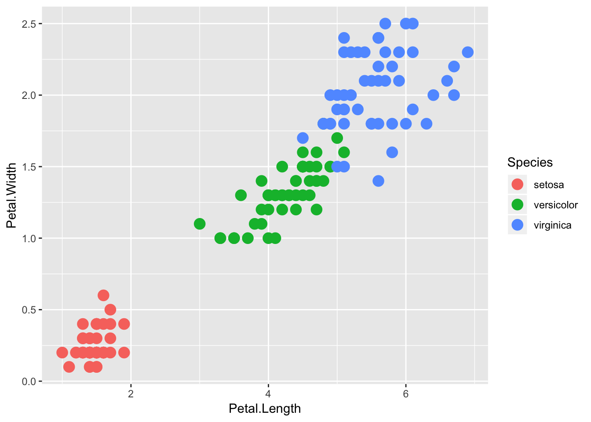
Shapes of Points
We could also map the type of point shape to the species
ggplot(data=iris.df, aes(x=Petal.Length, y=Petal.Width, shape=Species)) +
geom_point(size=4)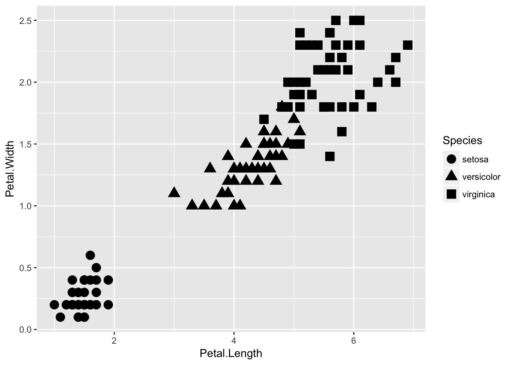
The shapes of the various options are:
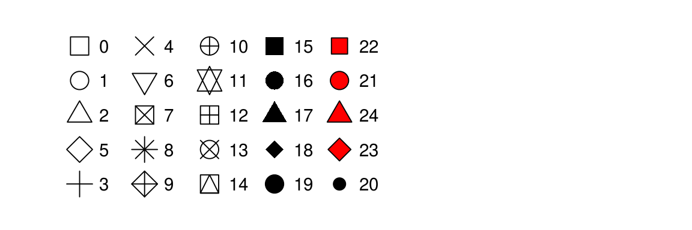
The types of lines you can have are:
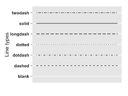
Facetting
Now the cool thing to be able to look at data is to be able to facet or look at subplots of all of the data at once
ggplot(data=iris.df) +
geom_point(aes(x=Petal.Length, y=Petal.Width, shape=Species, color=Species)) +
facet_grid(. ~ Species)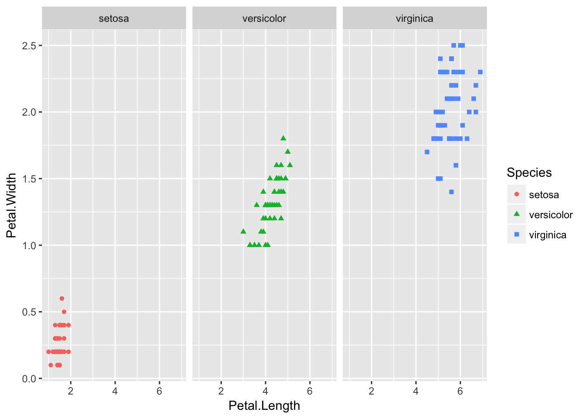
or
ggplot(data=iris.df) +
geom_point(aes(x=Petal.Length, y=Petal.Width, shape=Species, color=Species)) +
facet_grid(Species ~ ., scales = "free") 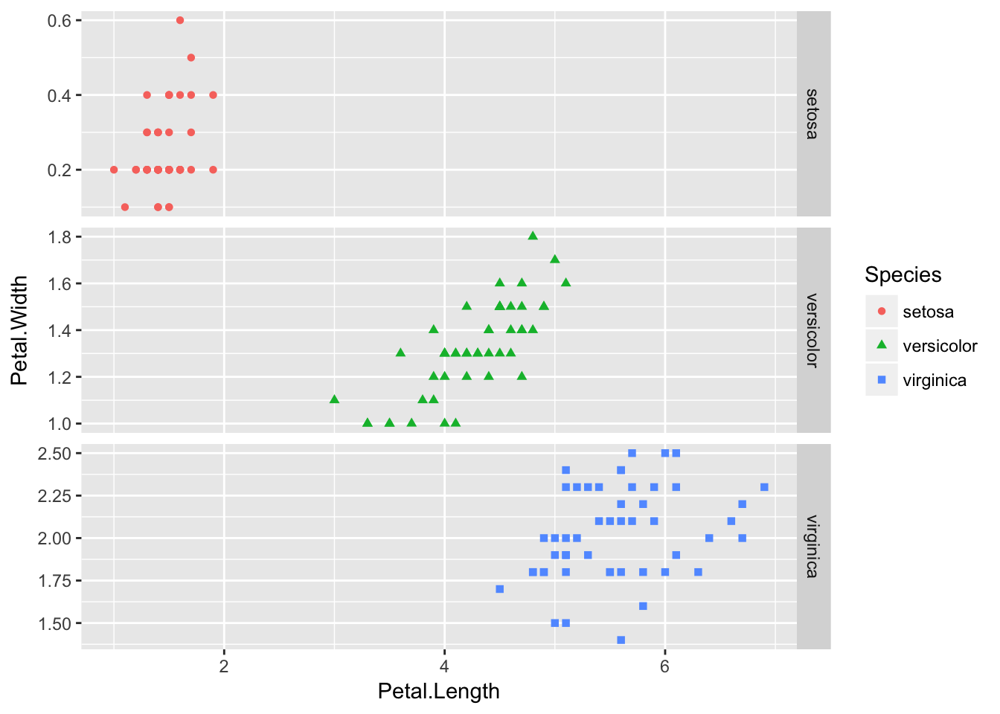
Facet wrap is slightly different and will allow you to have all free scales and facet by species
ggplot(data=iris.df) +
geom_point(aes(x=Petal.Length, y=Petal.Width, shape=Species, color=Species)) +
facet_wrap("Species", scales = "free")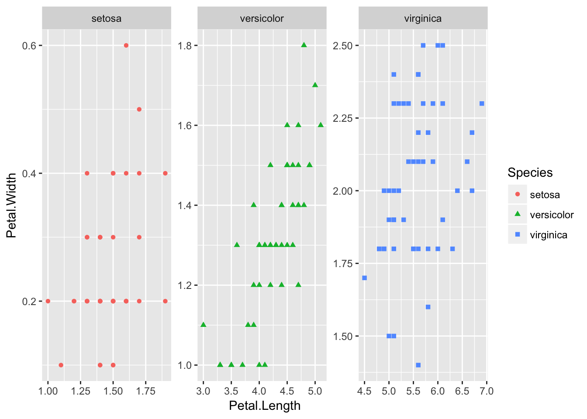
Adding Titles
Now to add in some of the basic things you might want to have on there to make it look nicer. We will work more on this later to get it publication quality but this is a start.
ggplot(data=iris.df, aes(x=Petal.Length, y=Petal.Width, shape=Species, color=Species)) +
geom_point() +
ggtitle("Petal Shape") +
labs(x="Petal Length", y="Petal Width")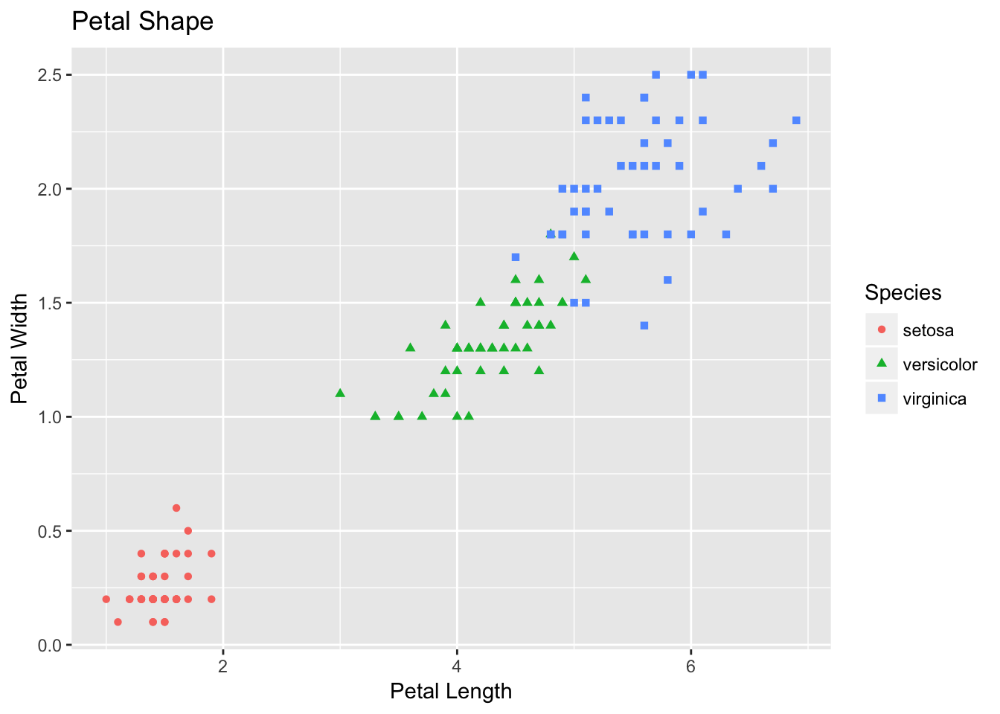
# we will get into themes but this will center the title
# theme(plot.title = element_text(hjust = 0.5))Time series plots
Now its time to work with data like we usually use in data on buoys and sensors - time series plots. These can be a bit trickier but tidyverse and the scales package come into their own now. ###Read in the data
streams.df <- read_csv("data/streams_q_gage_no3.csv", guess_max = 10000)## Parsed with column specification:
## cols(
## agency = col_character(),
## site_no = col_character(),
## site = col_character(),
## datetime = col_datetime(format = ""),
## discharge_cfs = col_double(),
## gage_ht_ft = col_double(),
## no3_mgl = col_double()
## )# Guess max extends the deault guessing of column type for a longer time than the
# default if there are mssing values down the column
glimpse(streams.df)## Observations: 57,492
## Variables: 7
## $ agency <chr> "USGS", "USGS", "USGS", "USGS", "USGS", "USGS", ...
## $ site_no <chr> "05554300", "05554300", "05554300", "05554300", ...
## $ site <chr> "indian_cr", "indian_cr", "indian_cr", "indian_c...
## $ datetime <dttm> 2017-02-23 17:00:00, 2017-02-23 17:15:00, 2017-...
## $ discharge_cfs <dbl> 34.6, 35.3, 35.3, 34.6, 35.3, 35.3, 35.3, 34.6, ...
## $ gage_ht_ft <dbl> 8.66, 8.67, 8.67, 8.66, 8.67, 8.67, 8.67, 8.66, ...
## $ no3_mgl <dbl> 7.94, 7.94, 7.93, 7.94, 7.93, 7.93, 7.93, 7.93, ...Basic time series plot
ggplot(streams.df, aes(datetime, no3_mgl, color=site)) +
geom_point()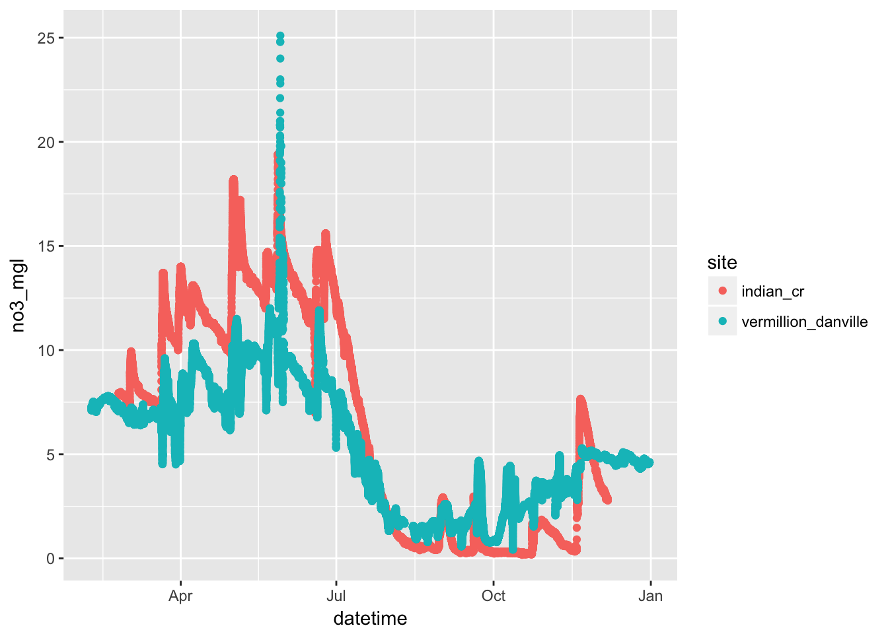
Scales - time series
ggplot(streams.df, aes(datetime, no3_mgl, color=site)) +
geom_point() +
scale_y_continuous()+ #expand=c(0,0), breaks=c(0,30,60)
scale_x_datetime(date_breaks = "1 month",
limits = ymd_hms(c('2017-01-01 00:00:00','2017-12-31 00:00:00')),
labels=date_format("%Y-%b-%d"), expand=c(0,0))## Warning: Removed 23 rows containing missing values (geom_point).
Themes
ggplot(streams.df, aes(datetime, no3_mgl, color=site)) +
geom_point() +
scale_y_continuous()+ #expand=c(0,0), breaks=c(0,30,60)
scale_x_datetime(date_breaks = "1 month",
limits = ymd_hms(c('2017-01-01 00:00:00','2017-12-31 00:00:00')),
labels=date_format("%Y-%b-%d"), expand=c(0,0)) +
theme_bw()## Warning: Removed 23 rows containing missing values (geom_point).
Theme - adjust text
ggplot(streams.df, aes(datetime, no3_mgl, color=site)) +
geom_point() +
scale_y_continuous()+ #expand=c(0,0), breaks=c(0,30,60)
scale_x_datetime(date_breaks = "1 month",
limits = ymd_hms(c('2017-01-01 00:00:00','2017-12-31 00:00:00')),
labels=date_format("%Y-%b-%d"), expand=c(0,0)) +
theme(
# LABLES APPEARANCE
axis.title.x=element_text(size=12, face="bold"),
axis.title.y=element_text(size=12, face="bold"),
axis.text.x = element_text(size=10, face="bold", angle=45, hjust=1),
axis.text.y = element_text(size=10, face="bold"))## Warning: Removed 23 rows containing missing values (geom_point).
Final time series plot
So lets make all the changes to the graph that we might want to do
ggplot(streams.df, aes(datetime, no3_mgl, color=site)) +
geom_point() +
scale_y_continuous()+ #expand=c(0,0), breaks=c(0,30,60)
scale_x_datetime(date_breaks = "1 month",
limits = ymd_hms(c('2017-01-01 00:00:00','2017-12-31 00:00:00')),
labels=date_format("%Y-%b-%d"), expand=c(0,0)) +
scale_color_manual (name="Sites",
labels=c("Indian Cr.", "Vermillion Cr."),
values=c("red","darkblue")) +
labs(x = "", y = "Nitrate NO3 (mg L^-1") +
theme(
# LABLES APPEARANCE
axis.title.x=element_text(size=12, face="bold"),
axis.title.y=element_text(size=12, face="bold"),
axis.text.x = element_text(size=10, face="bold", angle=45, hjust=1),
axis.text.y = element_text(size=10, face="bold"),
# plot.title = element_text(hjust = 0.5, colour="black", size=22, face="bold"),
# LEGEND
# legend.position="none",
# LEGEND TEXT
legend.text = element_text(colour="black", size = 12, face = "bold"),
# LEGEND TITLE
legend.title = element_text(colour="black", size=14, face="bold"),
# LEGEND POSITION AND JUSTIFICATION
# legend.justification=c(0.1,1),
# legend.position=c(0.02,.99),
# PLOT COLORS
# REMOVE BOX BEHIND LEGEND SYMBOLS
# REMOVE LEGEND BOX
legend.key = element_rect(fill = "transparent", colour = "transparent"),
# REMOVE LEGEND BOX
legend.background = element_rect(fill = "transparent", colour = "transparent"),
# #REMOVE PLOT FILL AND GRIDS
# panel.background=element_rect(fill = "transparent", colour = "transparent"),
# # removes the window background
# plot.background=element_rect(fill="transparent",colour=NA),
# # removes the grid lines
# panel.grid.major = element_blank(),
# panel.grid.minor = element_blank(),
# ADD AXES LINES AND SIZE
axis.line.x = element_line(color="black", size = 0.3),
axis.line.y = element_line(color="black", size = 0.3),
# ADD PLOT BOX
panel.border = element_rect(colour = "black", fill=NA, size=0.3))## Warning: Removed 23 rows containing missing values (geom_point).